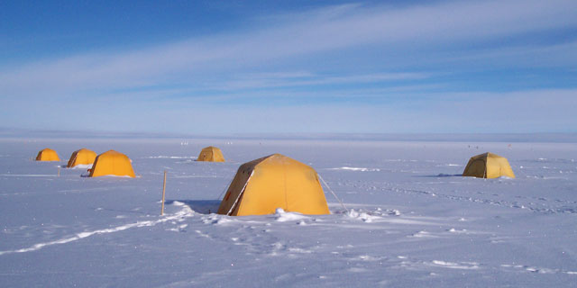
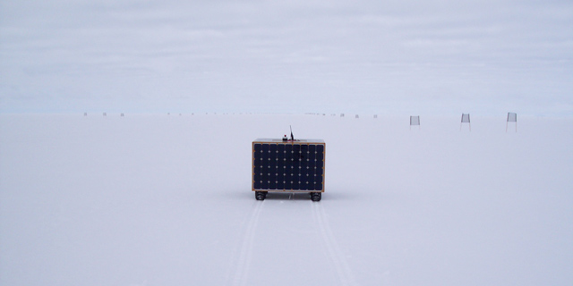

| |<< |< August 2, 2005 >| >>| | |
|
As one can see from the first of today's two pictures, the day started clear and beautiful. However, by the time we had had breakfast and set to work, the clouds had returned. The word on the wire is that there is some weather coming through, which might eventually clear away the overcast skies we have endured almost nonstop since our arrival a week ago now. At the very least, it has gotten colder - it was in the single digits (Fahrenheit) the whole morning, and a steady 10 knot wind was blowing from the NE. All in all, cold conditions for being outside. And to think, back home in Hanover they are posting temperatures in the mid 80's with lots of golden sunshine. It is a tricky thing to do any sort of testing outside when it is that cold. The clouds and snow create a surprisingly intense, but incredibly flat, lighting that requires sunglasses whenever you venture outside, and make it nearly impossible to read a laptop screen. Refer to the second of today's pictures. In addition, I often have to tap in commands, change code, start and stop the program, etc., which cannot be done in heavy gloves. Even thin glove liners result in numerous typos, and makes using the trackpad on the laptop nearly impossible. Yet, the work is there to be done, and when working on solar power, one really does have to be outside to effectively test it. There are some benefits to working with solar in these conditions, however. The colder temperatures keep the cells cooler, which results in higher efficiency. Secondly, the diffuse lighting created by the clouds and snow, which devilish for eyesight, provides all of the panels with nearly uniform insulation. All this information about solar power and being outside leads me to the big news of the day. Yesterday and this morning we focused our efforts on bringing one panel online to provide power to the robot. The control effort seeks to draw as much power from the solar panels as is needed for the rest of the robot. This is usually not the same thing as extracting all possible power from the solar panels. In the case of just a single panel in the half-light we have become accustomed to, there is not enough power available to satisfy the robot's full demand, unless the robot is stationary or driving at a very slow speed. However, with just two of the five panels online, as we achieved this afternoon, there was enough power to drive at a moderate speed without drawing supplemental power from the batteries. The jump from two panels to five is not as large as it might sound, so we are confident that we shall be able, by the end of this trip, to draw all our power from the sun and drive the robot continuously for hours and, ultimately, days on end. Now if only the sun will cooperate... --Alex Streeter |
|
|  | |
| Tent city under blue skies and crisp early morning sunshine. |
|
|  | |
| Later in the day, when Jim and I are actually doing work with the robot, the weather is a little less cooperative: overcast, cold, and with a steady wind. But, on the plus side, we've gotten to the point where the robot can drive itself (shown here), and draw some of its power from the solar panels (also shown here, although you can't see it). |
|
| |<< |< August 2, 2005 >| >>| |
| [Main] | [Mission] | [Design] | [Science] | [Papers] | [Pictures] | [Team] |
|
Last Updated on 10/20/2005 by Streeter
Site © Thayer School of Engineering, Dartmouth College, Hanover, N.H. |